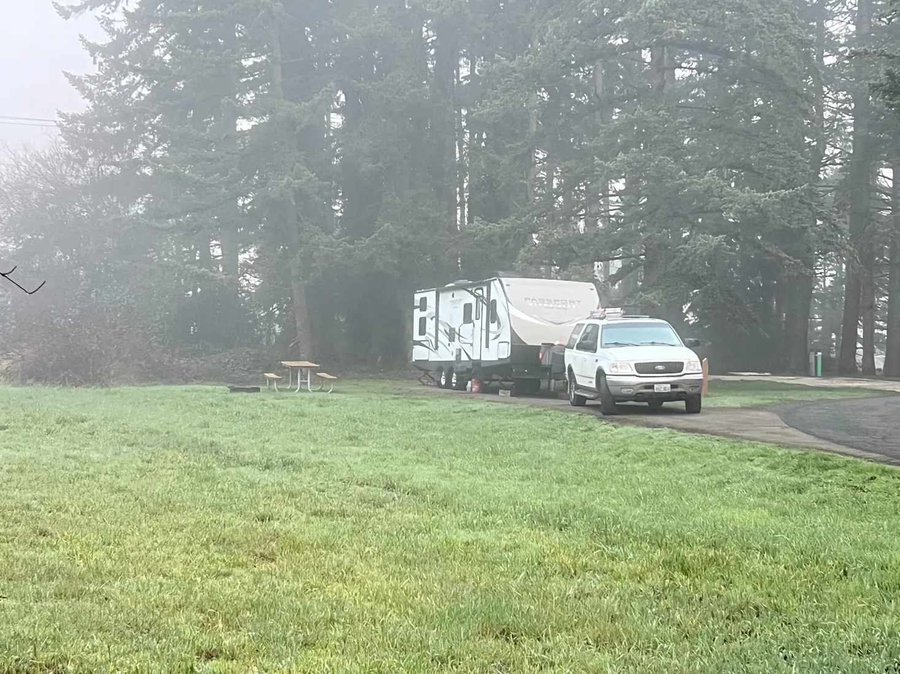
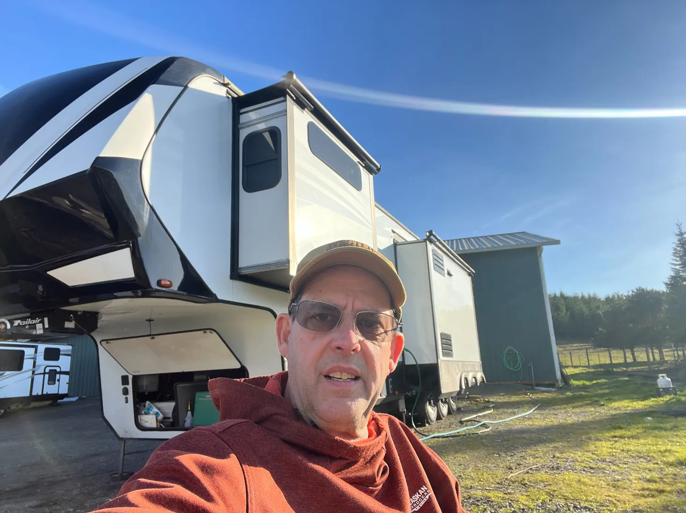
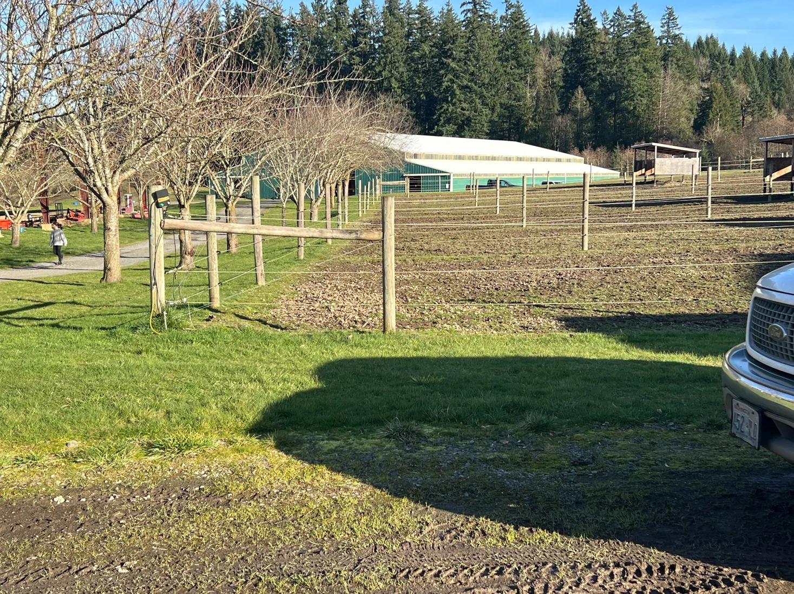
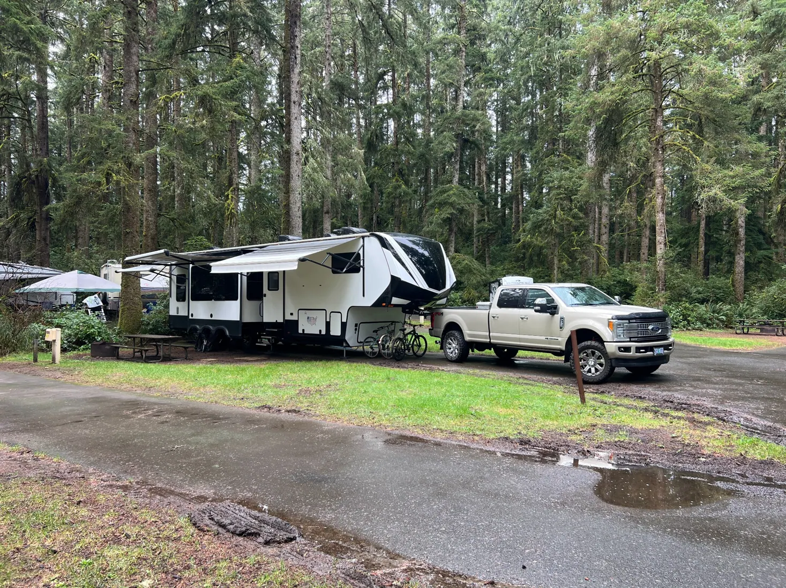
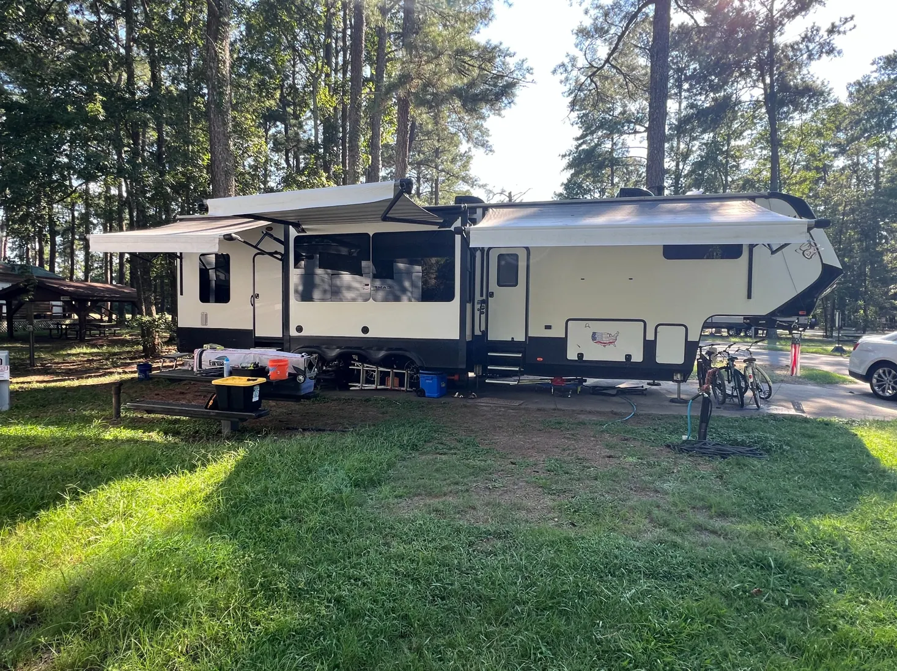

We Sold Our House to Live Full-Time in an RV. Here's What It Really Costs.
We sold our Washington house, bought a truck and fifth wheel with cash, and set out to live debt-free. Our regular monthly expenses went from roughly $7,000 to $4,000. But the story of how we got here is about a lot more than money.
Why we decided to go full-time
Janet and I had two reasons for deciding to sell our house and live full-time in an RV. First, we wanted to live debt-free. Second, we wanted to raise our kids in an environment away from the drugs and crime that had become part of everyday life around our home.
We'd spent nearly thirty years living in the Portland metro area. Over time, the problems around us had changed. Drugs, crime, and property theft weren't just things we heard about on the news anymore. They were affecting our neighborhood and our daily lives.
This wasn't about politics. It was about making the best decision we could for our family. We wanted something different. And here's the wonderful thing about living full-time in an RV: I get to choose where that is!
We'd been RVers for more than thirty years, but living in an RV full-time was something entirely different. Saving money was going to be a benefit. Freedom was the goal.
Selling the house was just the beginning
People sometimes imagine that going full-time happens in a single moment. You sell the house, buy an RV, load everything up, and drive off into the sunset. Well, that's not exactly how it worked for us.
We already owned a 29-foot Passport travel trailer that we'd had for about ten years, along with the Ford Expedition we used to tow it. Our plan was to sell the house, move into the Passport temporarily, and find a larger truck and fifth wheel.
There was just one small problem. When the house closed, we hadn't found either one.

So we packed ourselves into the Passport and moved to a state park just north of Vancouver, Washington. In January.
Nighttime temperatures dropped into the low 20s. Condensation inside the trailer became a serious problem, and our dehumidifier couldn't keep up. We were even starting to have a mold problem. Finding a bigger, better-equipped RV was becoming a priority.
First, we needed a truck. Then a home.
We knew we wanted a Ford F-350, but finding one in the year and mileage range we wanted proved harder than I expected. Eventually, a vehicle broker helped us locate the 2017 Ford F-350 Platinum diesel we're driving today. By our estimate, he saved us about $10,000.
Then came the fifth wheel. We looked at a lot of them before finding our Grand Design through a private seller. It wasn't perfect. There were quite a few minor issues that needed attention, but my background in home inspection and repairs meant I was comfortable taking most of them on myself.
We purchased it and brought it to my niece's horse ranch in Oregon City. Over the course of a few days, I repaired most of the issues we'd identified, and we moved from the 29-foot Passport into our 42-foot fifth wheel—our new tiny house on wheels.

An 82-acre ranch and something we hadn't felt in years
My niece's ranch has 82 acres and more than 50 horses. We stayed for about a month while getting everything sorted out. Every morning, we'd wake up overlooking the paddocks and watch the horses just being horses.

It might not sound like much, but after nearly thirty years of living the way we had, it was something completely different. Sure, we'd experienced beautiful places on vacations. But this wasn't a vacation. This was where we were living.
For the first time in a very long time, I felt peace. It wasn't just me, either. The kids' usual anxieties were beginning to ease. Janet and I were feeling more peaceful, too. The stress of running a business and carrying a moderate amount of debt was beginning to melt away.
We were grateful to God for the opportunity to change our lives. We hadn't traveled across the country yet. We were still in Oregon, not far from where we'd spent so many years. But something had already changed.
We were discovering that freedom wasn't necessarily about how far we could travel. It was about how we could live. There was no rush to get back home. We were already home.
Ocean Shores, then south—with no Plan B
By the middle of February, we'd put the Passport on a consignment lot. We had our truck, our fifth wheel, and a home that was ready to travel. Before leaving the Pacific Northwest, we went to Ocean Shores, Washington, where my parents and sister live. We spent about a month with family, then headed south down the Oregon Coast.
We knew we'd made the right decision. There was no Plan B. But even after more than thirty years of RVing, we had a lot to learn. We'd never owned a fifth wheel, and we were still thinking like people towing a 30-foot trailer.
Our Grand Design is 42 feet long. With the truck, we're nearly 60 feet moving down the highway, and we're 13 feet, 6 inches tall. Setup and teardown were easier in some ways, but backing, tight state park roads, low-hanging limbs, and low overpasses demanded more attention. Even snack stops meant looking for a parking spot out in the back forty.
We didn't regret the decision. We just had to learn to think bigger. A lot bigger.
Fort Stevens: when confidence meets reality
One of our first stops was Fort Stevens State Park on the northern Oregon Coast. We arrived late, with daylight nearly gone, found a site, and I backed that 42-foot fifth wheel in like a pro.
Perfect. We set up camp, and I went online to pay for the site. That's when I discovered it already had a reservation.
We ate dinner and decided to move. Just one site over. In the dark. BAD PLAN.

Hubris has a way of biting you. What had been a beautiful backing job turned into a nightmare relocation. The ground was soggy, the trailer wheels kept slipping into the mud, and we made a real mess of that wet campsite.
Back up. Pull forward. Try again. And again. And again.
What should have taken ten minutes took about an hour and no fewer than thirty attempts. Some camping neighbors came over with excellent lights and helped us finally get into the site. I looked like a total newbie. And of course, we didn't get a second of it on video.
But even then, there was no doubt we'd made the right decision.
And just to add insult to injury? The people who'd reserved our original site never showed up. We could have stayed right where we were!
Sometimes all you can do is laugh.
So how much does full-time RV living really cost?
Before we sold the house, our regular monthly expenses were about $7,000, including the house, vehicles, credit cards, groceries, insurance, and the rest of everyday life. Today, our normal monthly living expenses are about $4,000.
That's roughly $3,000 less each month—about $36,000 over twelve months if the difference held steady. But there's an important qualification: we sold our house and used the proceeds to buy both the truck and fifth wheel with cash. We don't have truck or RV payments. We're living debt-free.
Our $4,000 figure describes normal ongoing living expenses, not the upfront cost of buying the equipment or extraordinary mechanical repairs. If you're financing your rig, moving constantly, or choosing different kinds of campgrounds, your numbers will be different.
Campgrounds: averaging $50 a night
While traveling, our target was an average of $50 per night. Some nights were more, some less, and some free. State parks, Harvest Hosts, Elks Lodge opportunities, and occasional dry camping helped us balance the budget.
For longer stays, we looked for monthly rates around $800–$1,000, rather than spending around $1,500 for thirty nights at $50 each. But unexpected delays can change the math. During our suspension failure in Georgia, six nights at $80 meant $480 in campground fees—$180 above our usual nightly target, before the repair itself.
Diesel prices: learning to travel differently
Fuel was one expense we knew we'd have to plan for. We started on the West Coast, where diesel was already expensive, so I budgeted around $5.25 per gallon and 10 miles per gallon while towing. That gave us a planning figure of about 52.5 cents per towing mile.
During our first 90 days, we traveled roughly 4,200 miles. We had a general direction and wanted to avoid the Midwest in winter, but we weren't following a rigid itinerary.
Since then, diesel prices have risen beyond what we'd planned. Fuel costs aren't something we can calculate once and forget about anymore. We're adjusting our plans as prices change, sometimes week to week.
Our answer is to drive shorter distances and stay longer. If fuel prices return to a level that makes more travel practical for us, we'll explore farther again.
But here's the unexpected part: slowing down has been good for us. We're spending more time getting to know the places where we stay—their history, their people, their small businesses, and the flavor each community has to offer. We're seeing things we might have missed if we'd simply passed through.
Full-time RV living doesn't mean you have to be moving all the time. Sometimes the freedom is being able to stay right where you are and really enjoy it.
Groceries: a surprise in Texas
We rarely eat out, so groceries are a meaningful part of our family budget. Once we reached Texas, our grocery spending dropped by almost 30% compared with the Pacific Northwest. That was a welcome surprise.
Of course, we also have a 17-year-old son who seems determined to make up that 30% difference every day. If you've raised a teenage boy, you probably understand.
Unexpected repairs: a different kind of expense
We set aside $5,000 for annual maintenance, and I still think that was a reasonable plan for ordinary maintenance under normal circumstances. What we didn't anticipate were several major mechanical problems.
An unexpected tire failure meant about $3,000 in new truck tires. Then the fifth-wheel suspension failed in Georgia, costing about $3,800 to repair.
And just when we thought we'd worked through the worst of it, our truck developed a serious mechanical problem that brought our travels to a halt. That has been a real challenge.
We're still working through the situation, and it's a story that deserves more than a paragraph in a blog post. We'll share the experience in an upcoming Goseeda video series.
When your truck is also the vehicle that moves your home, a major mechanical failure changes more than your repair budget. It changes your plans, sometimes for much longer than expected. We've had to adjust our timeline and figure out the next step.
But has it changed how we feel about living full-time? Not one bit. Around here, we have a saying: Don't panic. Work the problem.
Is full-time RV living actually cheaper?
For our family, yes—when we're talking about normal monthly living expenses. But I wouldn't tell you everyone who sells their house and moves into an RV will save $3,000 a month.
RV and tow-vehicle payments, how frequently you travel, your campground preferences, fuel, food, and unexpected repairs can all change the answer. Our costs reflect the choices we made and the fact that we purchased our truck and fifth wheel outright.
More important, we didn't do this simply to spend less. We wanted to live differently.
What we've gained that doesn't show up in the budget
I still think about those mornings on my niece's ranch: the paddocks, the horses, the kids relaxing, and Janet and me feeling a weight lift.
Since then, we've traveled across the country, visited places we'd wanted to see, and shared experiences with our kids that we wouldn't trade. Not every day has been easy. Some days are ordinary. And some days you spend an hour trying to move a fifth wheel one campsite over in the mud.

But this isn't a vacation. This is our life. And we get to choose where home is.
Would we do it again?
People sometimes ask if we'd make the same decision knowing what we know now—the learning curve, the unexpected repairs, and all the changes in our plans.
Yes, and twice on Sunday. Absolutely!
We wanted to live debt-free, give our kids new opportunities, and choose where we called home. Freedom doesn't mean life stops throwing problems at you. It means you get to choose how you live while you work through them.
Some mornings home overlooks an 82-acre horse ranch. Other mornings it's a campsite along the Oregon Coast. And sometimes it's a muddy campground where you've just spent an hour moving one campsite over.
But wherever we are, we're home.
There's no other place I'd rather be than right here.
Wherever here is!
Don't panic. Work the problem.
— Goseeda
Come along for the journey
We're a family of four living full-time in our fifth wheel, sharing the places we visit, the challenges we face, and what we're learning along the way.
Watch Goseeda on YouTube → Explore Going Full-Time →